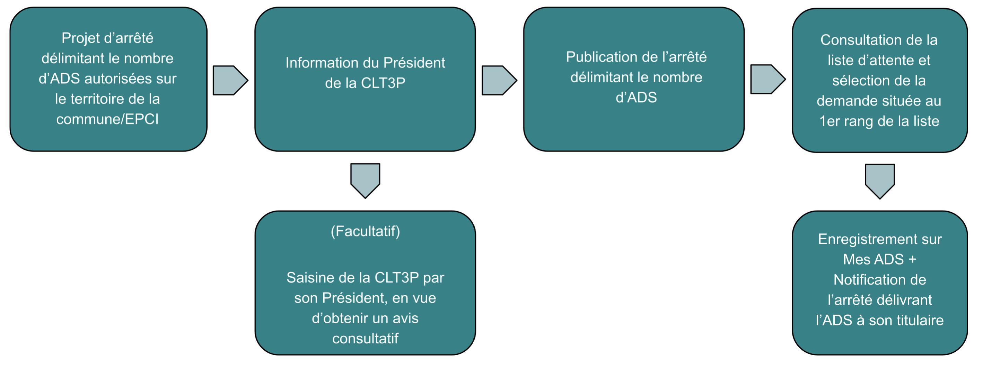

Chaque maire fixe par arrêté le nombre total d'ADS sur sa commune.
Il s'agit d'un acte réglementaire à bien distinguer de la décision individuelle d'attribution d'une ADS à une personne physique: l'arrêté délimitant le nombre d'ADS doit donc être publié.
Combien d'ADS une commune peut-elle créer?
Le Conseil d'Etat a précisé que l'autorité compétente doit tenir compte « des besoins de la population, des conditions générales de la circulation publique et des équilibres économiques de la profession des exploitants de taxi ».
L'autorité compétente pour la délivrance d'ADS est seule compétente pour apprécier cet équilibre sous le contrôle du juge de l'excès de pouvoir.
L'autorité compétente pour la délivrance d'ADS a l'obligation d'informer le Président de la CLT3P (commission locale du T3P, qui siège au moins une fois par an) du projet d'arrêté modifiant nombre d'ADS sur la commune.
Le président de la CLT3P peut soumettre ce projet d'arrêté à l'avis de la commission qu'il saisit alors: l'avis rendu par la commission est facultatif et non contraignant pour l'autorité compétente qui reste le décisionnaire final.
Je souhaite créer une ADS supplémentaire sur ma commune :
Étapes, dans l’ordre :

Transcription textuelle